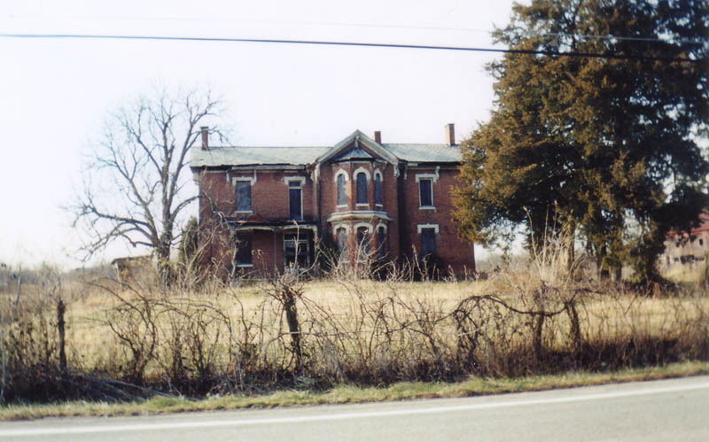
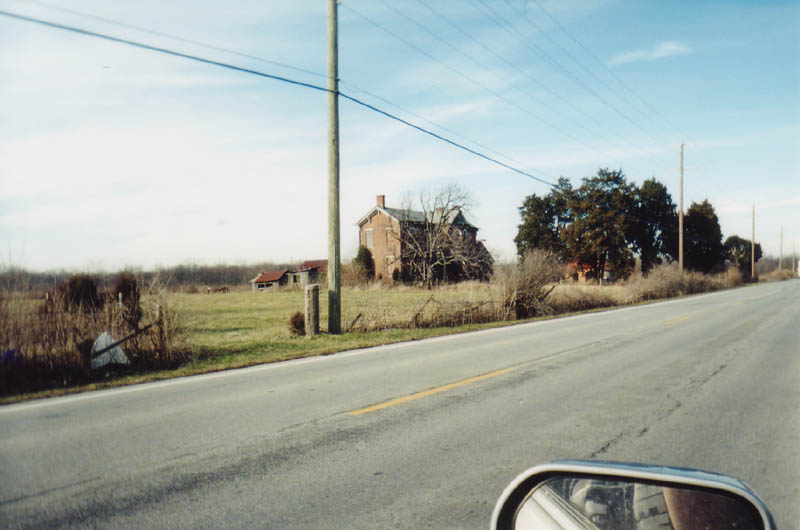
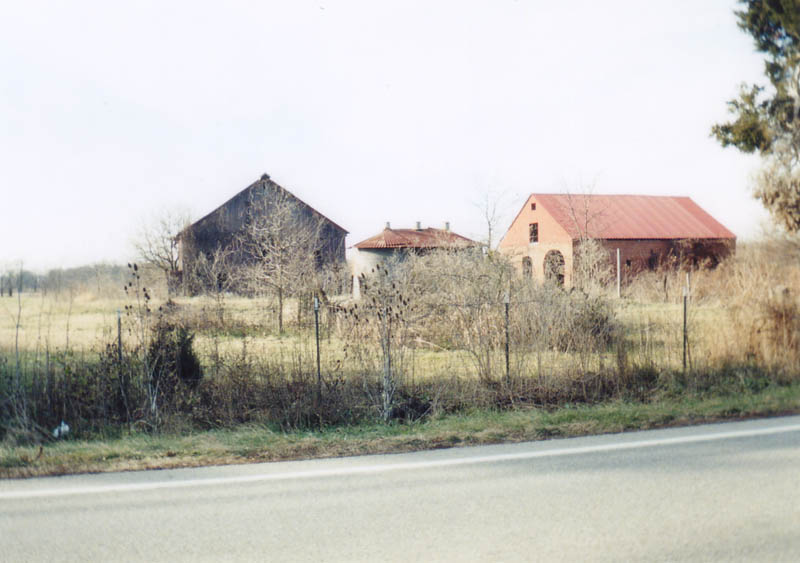
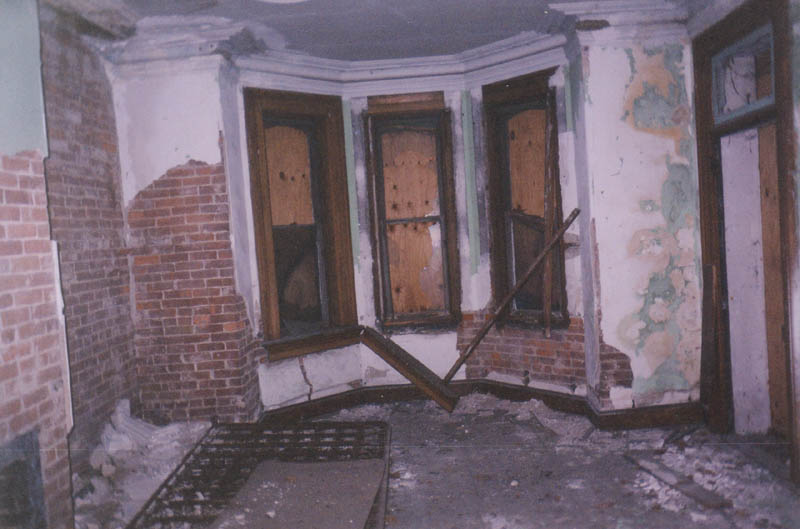
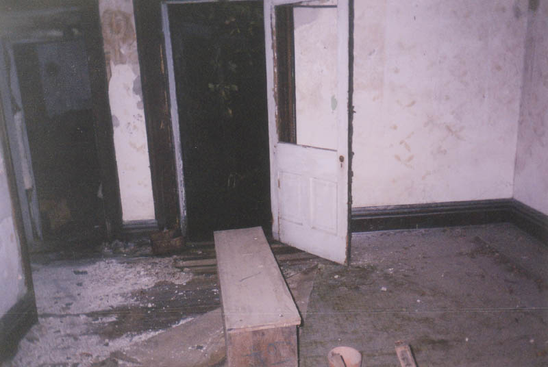
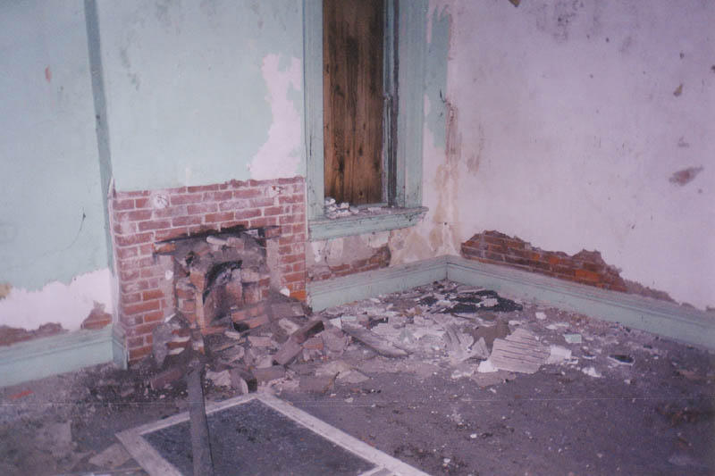
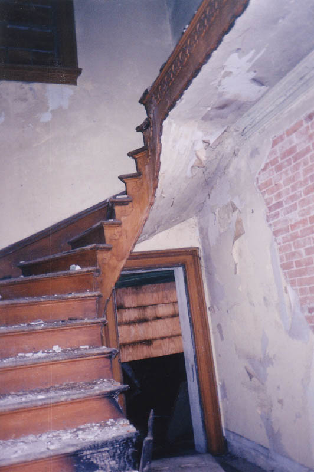
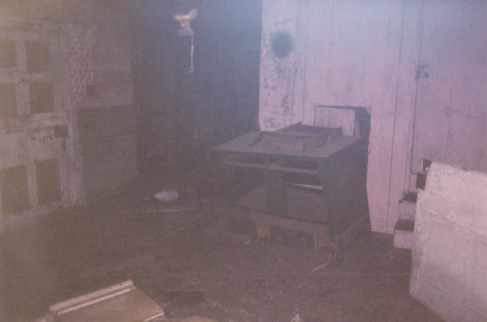
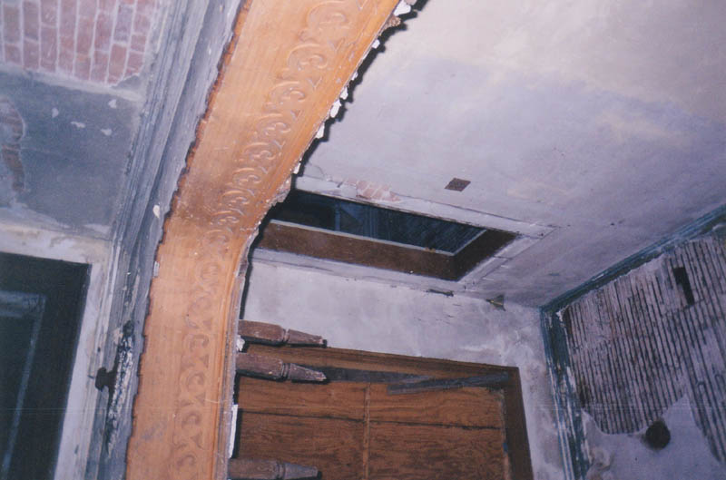
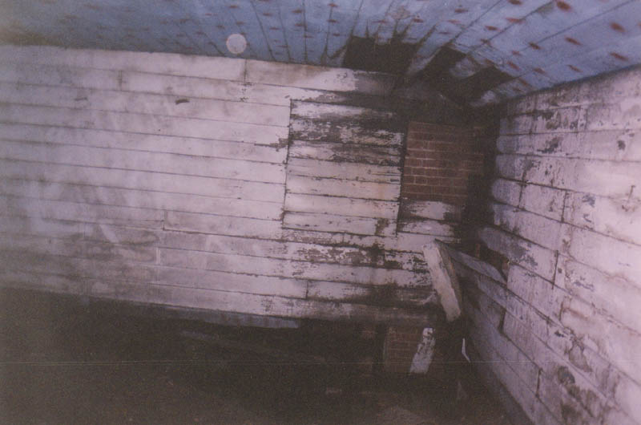

The State Route 104 Abandoned Farmhouse

This old farmhouse is on State Route 104, just south of the place where it overpasses I-270 in southern Franklin County. It's actually part of the Columbus suburb of Grove City.

I don't know anything about this house other than what it looks like, where it's located, and what condition it was in when I visited it, along with Troy and Jennifer, in mid-2002. It's clearly an old farmhouse, judging by the land and the wide assortment of outbuildings nearby. The red brick barn with arched doorways is particularly unusual.

It's a very large and beautiful house--built, I'm guessing, no later than 1890. Particularly nice are the bellied windows in the living room and second-floor parlor, fireplaces, and arched doorways with intricate trim along the edge.

Inside the house is all towering ceilings and plaster crumbling away from brick. The floors are wood. Seemingly every corner is decorated with ornate floorboards and other such country-hearth touches. A lot of stuff has been removed; the fireplaces are little more than caved-in holes low in the wall, probably bricked over by later occupants.


The stairs, pictured below, are rickety in the extreme and completely lack a railing to keep you from tumbling back down through the stairwell, even once you've reached the saggy second-floor landing. We kept our feet at the edges of the second-story rooms because it felt so unreliable.

Items left behind in this abandoned house include light fixtures, pieces of some living room furniture, and, in one of the upstairs bedrooms, an old bureau.

Least identifiable of all was the section of the house furthest back, behind the kitchen. Its low ceiling and independent second floor--isolated from the rest of the upper floor and reached only through a hatchway like an attic--made us wonder if it was some sort of storage shed attached to the house. A pantry, possibly?

Once through the opening in the ceiling, this is what the wooden-walled room looked like:

It's hard to know much of anything about such an old, decrepit house. A high school teacher of mine recalls the farmhouse on 104 being abandoned back in the 1970s. How long has it been since anyone lived here? If you know, please send me an e-mail and fill me in.
Back
{kind=link}
{kind=link}
{kind=link}
{kind=link}
{kind=link}
{kind=link}
{kind=link}
{kind=link}
{kind=link}
{kind=link}